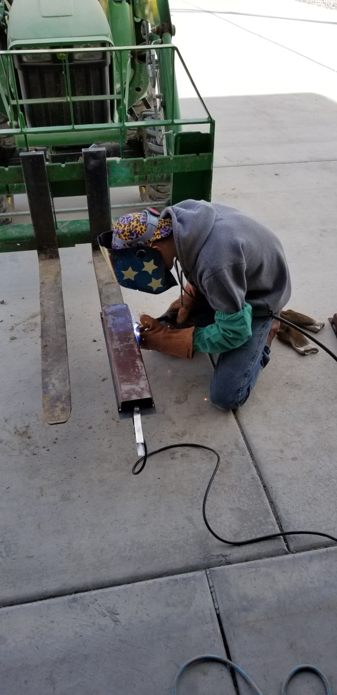
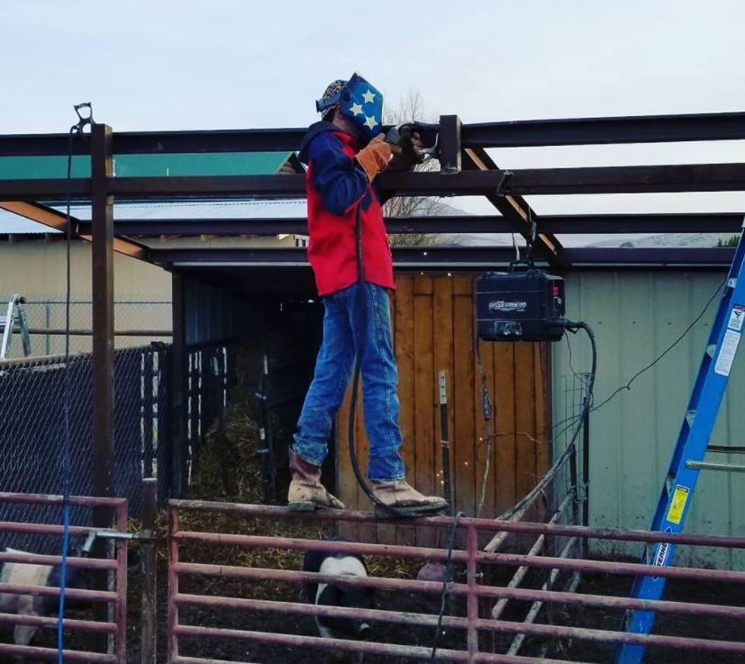
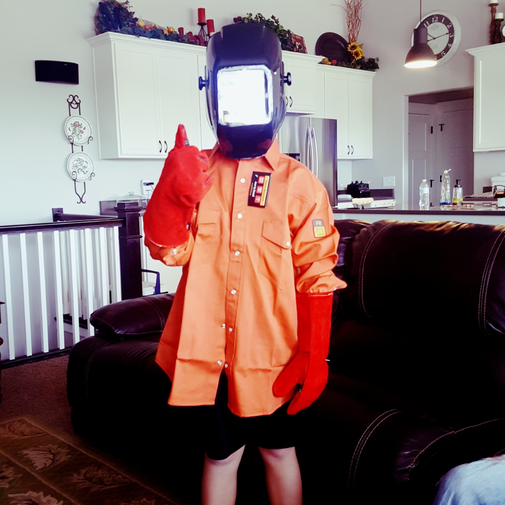
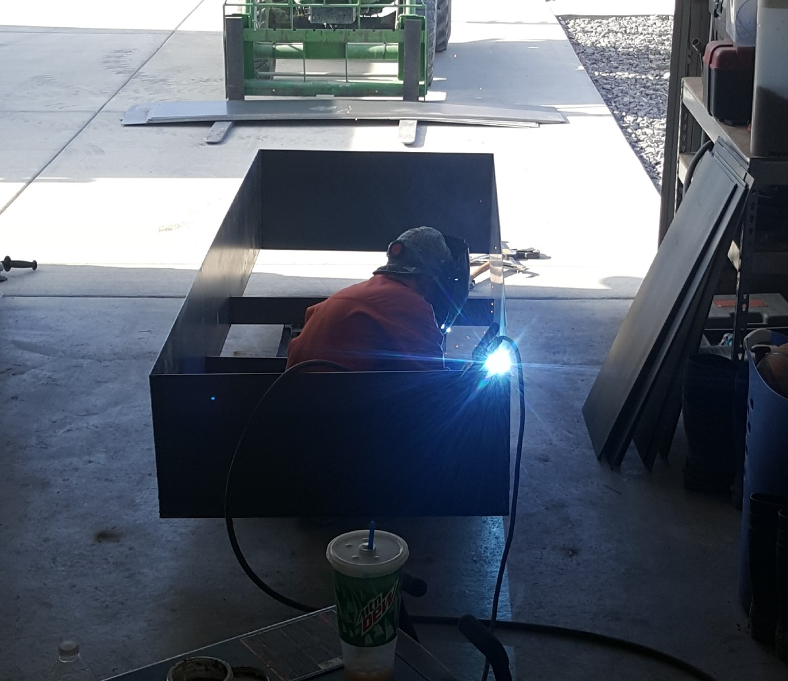

Family-owned businesses are the backbone of the American economy. Studies have shown about 35% of Fortune 500 companies are family-controlled and represent the full spectrum of American companies from small business to major corporations. Mile High Fabrication is third generation of welders and pride ourselves on providing quality products within a timely manner.



